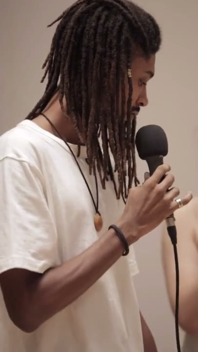
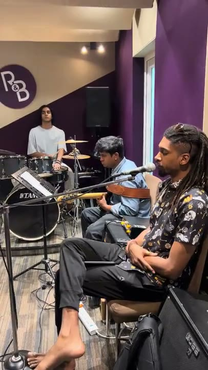

NMACC Performance 02
Studio Session 03Spoken-word pieces on video and audio, and a book collecting the ones that outgrew the mic.
This is where both versions sit — clips and recordings you can watch or listen to right here, and the book for the pieces that ask for more room than a stage or a screen gives them.
A running set — video pieces and recorded audio, added as they're ready. Links below are placeholders until the real clips are dropped in.
Flip through a few pages from “a moment,” then get your own copy.
Drag a corner, or use the arrows